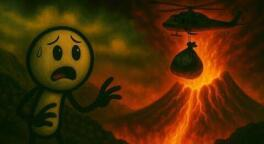

اگر زبالهها را در آتشفشان بریزیم چه میشود؟

چشمهایت را ببند و تصور کن. یک طرف، قبرستانی از کوههای بیپایان زباله: پلاستیک، شیشه، فلز، تهماندهٔ غذا. یک معضل بدبو و زشت که انگار هیچوقت تمام نمیشود و هر روز هم بزرگتر میشود. آن طرف، منظرهای که هم ترسناک است و هم جذاب: یک آتشفشان فعال. غولی خفته یا بیدار که از دلش آتش مایع بیرون میریزد. گدازههای سرخ و سوزان، انگار تکهای از خورشید را کنده و آوردهاند روی زمین.
اینجا ذهن خلاق و شاید یککم تنبل آدمیزاد جرقه میزند. هی، چرا این دو تا را با هم قاطی نکنیم؟ چرا این زبالههای مزاحم را نریزیم توی آن کورهٔ طبیعی عظیم؟ یک راهحل نهایی، یک جور پاکسازی با آتش. بیندازیمشان آنجا، ذوب شوند، بخار شوند، بروند، و بشر یک راهحل دائمی برای این مشکل داشته باشد. وسوسهانگیز است، نه؟ انگار داری یک راز بزرگ را کشف میکنی؛ یک میانبر برای یک مشکل جهانی، مثل دکمهٔ حذف روی کیبورد برای تمام زبالههای دنیا.
اما رفیق، هر وقت برای یک مشکل خیلی بزرگ یک راهحل خیلی ساده و خیلی خفن پیدا کردی، یک کم به آن شک کن. معمولاً پشت این سادگی یک عالم پیچیدگی و خطر پنهان شده. بیا ببینیم اگر چنین خطی کنیم، چه آشی برای زمین میپزد.
سمفونی انفجار
اول باید بفهمیم آن دریاچهٔ آتش دقیقاً چیست. گدازهٔ مذاب فقط داغ نیست. داریم از دمای حدود ۷۰۰ تا ۱۲۰۰ درجه سانتیگراد حرف میزنیم؛ آنقدر داغ که فولاد را مثل کره نرم میکند. حالا فرض کن کیسهٔ زباله با تمام محتویاتش، از پوست هندوانهٔ آبدار تا بطری پلاستیکی و قوطی رب، با یک یاعلی(علیه السلام) پرت شود توی این جهنم.
انتظار داری مثل یک تکه یخ در چای آرام حل شود. زهی خیال باطل. اینجا فیزیک یک نمایش ترسناک راه میاندازد. آب و رطوبت داخل زبالهها، که تقریباً همیشه هست، به محض تماس با آن حرارت یک اتفاق برایش میافتد: تبدیل فاز آنی. در کسری از ثانیه آب مایع به بخار فوقداغ تبدیل میشود و حجمش صدها برابر میشود. مثل زودپزی که یکدفعه درش را برداری. نتیجه یک انفجار بخار است که با انفجارهای معمولی قابل مقایسه نیست.
این انفجار میتواند تکههای گدازه، سنگ داغ و زبالهٔ نیمسوخته را با سرعت زیاد صدها متر به هوا و اطراف پرتاب کند. انگار آتشفشان محتویاتش را با عصبانیت بالا میآورد. هر کس آن اطراف باشد در خطر جدی است.
این فقط بخش آب ماجرا بود. زبالههای جامد و بزرگتر چه؟ یک یخچال قدیمی، یک تایر ماشین. اینها مثل سنگهایی هستند که در یک استخر آرام بیندازی. سطح گدازه را میشکافند، پاشش شدید مواد مذاب راه میاندازند و لایههای زیرین را به هم میزنند. گاهی گازهای آتشفشانی زیر یک پوستهٔ سفت گیر کردهاند. ورود یک جسم خارجی میتواند آن پوسته را بشکند و گاز را ناگهان آزاد کند. یک جور عطسهٔ آتشفشانی.
فکر کن یک هواپیما بخواهد از بالای این منطقه رد شود. خاکستر و ذرههای ریزی که از این انفجارها و حتی از سوختن ناقص زبالهها بلند میشود میتواند موتور هواپیما را از کار بیندازد. یعنی خطرش فقط زمینی نیست؛ هوایی هم هست.
هوای سمی
فرض کنیم یک تیم ویژه با لباس مناسب و تجهیزات ایمنی توانسته باشد زبالهها را بریزد و از آن باران آتش و سنگ جان سالم به در ببرد؛ که خودش یک فیلم علمیتخیلی است. آیا مشکل حل شد؟ آیا زبالهها به ملکوت اعلی پیوستند؟ متأسفانه نه.
زبالههای ما یک سمفونی شیمیاییاند. پلاستیک وقتی میسوزد، بهخصوص در دمای بالا و با اکسیژن کم، گازهای بسیار سمی مثل دیوکسین آزاد میکند. اینها از پایدارترین و خطرناکترین آلایندهها هستند؛ برای بدن و برای محیط زیست فاجعهبار. بعضی فلزها ذوب میشوند و بعضی نه. اما فلزهای سنگین مثل جیوه و سرب، که در باتری و قطعهٔ الکترونیکی زیادند، بخار میشوند و ذرههای سمیشان در هوا پخش میشود.
مواد شیمیایی خانگی و صنعتی، پاککننده، حلال و رنگ، وقتی وارد آن حرارت شوند یک ارکستر از واکنشهای خطرناک و گازهای ناآشنا راه میاندازند. حتی چیزهای بهظاهر بیخطر مثل چوب، کاغذ و مواد آلی، وقتی ناقص بسوزند مونوکسید کربن و کلی ذرهٔ معلق میسازند. به اینها اضافه کن گازهایی که خود آتشفشان به طور طبیعی بیرون میدهد: دیاکسید گوگرد که مشکل تنفسی و باران اسیدی میآورد، اسیدهای خورنده، و دیاکسید کربن که یک گاز گلخانهای مهم است.
حالا تصور کن تمام این گازهای طبیعی و غیرطبیعی با هم قاطی شوند و یک ابر غلیظ و سمی بالای دهانه تشکیل بدهند. این ابر با باد حرکت میکند و هر جا برسد دردسر میسازد. اول از همه باران اسیدی. این فقط یک اسم ترسناک نیست. این باران میتواند برگ درختها را بسوزاند، خاک را اسیدی و کمحاصل کند، فلز سنگین را وارد آب زیرزمینی کند، دریاچه و رود را آنقدر اسیدی کند که ماهی و موجود آبزی دوام نیاورند، و به ساختمان، پل و حتی آثار باستانی آسیب بزند؛ یعنی سنگ را کمکم حل کند.
با این کار، به بهانهٔ خلاص شدن از زبالهٔ شهری، داریم اکوسیستم اطراف و حتی دورتر را مسموم میکنیم.
کدام آتشفشان؟
خب تا اینجا فهمیدیم هم انفجار دارد هم گاز سمی. یک قدم جلوتر: اصلاً کدام آتشفشان قرار است میزبان این زبالههای عزیز باشد؟ آتشفشانها مثل آدمها تیپهای مختلفی دارند.
آتشفشانهای انفجاری، مثل دماوند خودمان یا فوجی ژاپن، معمولاً دهانهشان با درپوشی از مواد سفتشده بسته است. فشار گاز و ماگما زیر این درپوش جمع میشود و وقتی دیگر تاب نیاورد، یک فوران عظیم رخ میدهد. ریختن آشغال در دهانهٔ اینها مثل روشن کردن فتیلهٔ یک بمب ساعتی است. اصلاً دریاچهٔ گدازه شوخی ندارد که بخواهی چیزی در آن بریزی.
آتشفشانهای سپری، مثل آتشفشانهای هاوایی، معمولاً آرامترند و گدازهٔ روانتری دارند که میتواند دریاچهٔ گدازه بسازد. به نظر گزینهٔ بهتری میآیند؟ نه. صبر کن. این دریاچهها هم جای شوخی نیستند. سطحشان دائم عوض میشود، پوستهٔ سخت رویشان تشکیل میشود و میشکند، فوارهٔ گدازه ازشان بلند میشود و گاز سمی پیوسته بیرون میآید. پایدار نیستند و نزدیک شدن به آنها فوقالعاده خطرناک است.
حالا گیریم یک آتشفشان سپری نسبتاً آرام و خوشاخلاق پیدا کردیم، که خودش کمیاب است. چالش بعدی این است: چطور هر روز هزاران، شاید میلیونها تن زباله را از شهرها و کشورها جمع کنیم و ببریم بریزیم آنجا؟ بیشتر آتشفشانهای فعال در مناطق دور، کوهستانی و سختگذرند. باید جادهٔ مخصوص، شاید خط ریلی، یا حتی فرودگاه نزدیکشان ساخت. آن هم کنار غولی آتشین که هر لحظه ممکن است یک سرفه کند و کل زیرساخت را نابود کند. هزینه سر به فلک میکشد.
کارگرانی که باید این زباله را حمل و تخلیه کنند در معرض گرمای شدید، گاز سمی، انفجار ناگهانی و زمینلرزهٔ محلیاند. چه کسی حاضر میشود چنین شغلی داشته باشد؟
مقیاس
یک حساب سرانگشتی. بشر سالانه حدود ۲ میلیارد تن زبالهٔ جامد شهری تولید میکند؛ یعنی روزی بیش از ۵ میلیون تن. بزرگترین دریاچههای گدازهٔ دنیا در مقابل این حجم مثل یک گودال کوچکاند. چقدر طول میکشد تا پر شوند؟ تازه وقتی پر شد میخواهی چه کار کنی؟ یک آتشفشان جدید پیدا کنی؟
از هر طرف که نگاه کنی، این ایده پر از چالهٔ عملی، اقتصادی و ایمنی است. ریختن آشغال در آتشفشان نه تنها راهحل نیست، دستورالعمل ساختن فاجعه است.
یک: خطر انفجار مهیب بهخاطر واکنش آب و مواد دیگر با گدازهٔ داغ. دو: آلودگی هوای شدید با گازهای سمی و گلخانهای، خیلی خطرناکتر از سوزاندن عادی. سه: باران اسیدی که اکوسیستم، کشاورزی و زیرساخت را خراب میکند. چهار: نشدنی بودن حمل این حجم زباله به مناطق خطرناک و دورافتاده. پنج: ناپایداری خود آتشفشان، که هر لحظه ممکن است فوران کند یا رفتار غیرمنتظره نشان بدهد. شش: مقیاس؛ حجم زبالهٔ ما خیلی بیشتر از ظرفیت هر آتشفشانی است.
برای طبیعت باید احترام زیادی قائل بود. سر به سر طبیعت گذاشتن، امضای حکم سختی برای خود بشر است. شاید بهتر باشد بیشتر مراقب رفتارمان با طبیعت باشیم؛ از کارهای کوچک گرفته تا خیال ریختن زباله در آتشفشان. تا فکر بعدی، کنجکاو بمان.